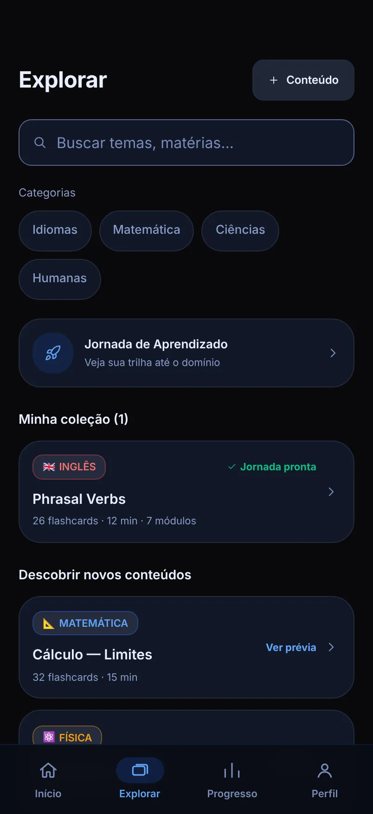
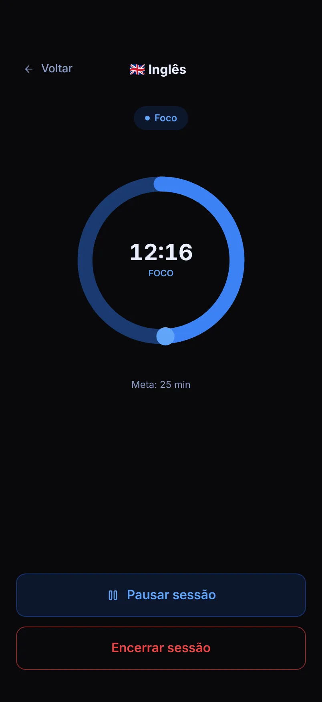
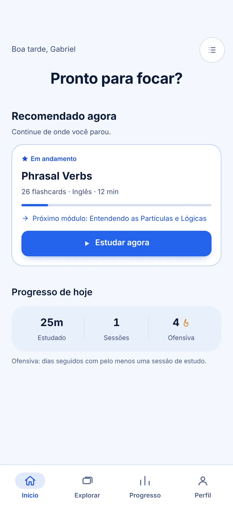
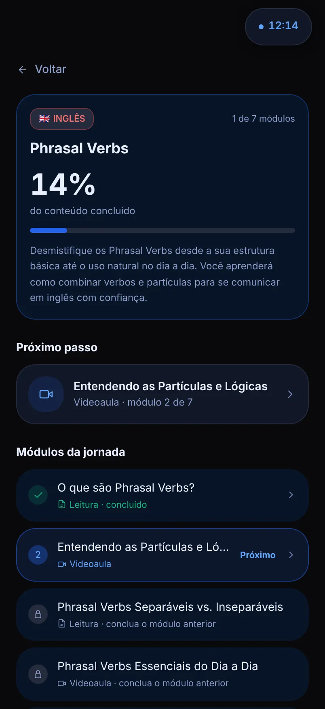
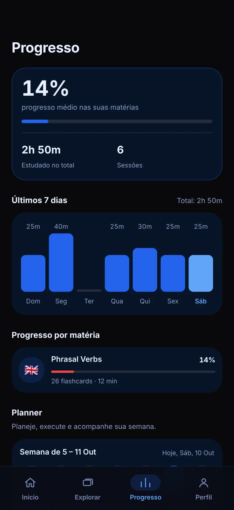

Case 02Produto digital funcional
Study
Aplicativo web que transforma um tema em uma trilha de estudo, com videoaula, leitura, prática e avaliação, e usa sessões de foco para mostrar o progresso. Está no ar e pode ser testado.
Como ler este case. Cada afirmação importante traz uma etiqueta que diz de que tipo ela é:
- Implementadoexiste no produto que está no ar.
- Designdecisão de produto ou de interface.
- Hipótesepremissa que ainda não foi validada com usuários.
- Planejadopesquisa, teste ou funcionalidade que ainda não aconteceu.



Nesta páginaResumo
- Resumo
- Contexto e problema
- Público e necessidades
- Meu papel e autoria
- Arquitetura e fluxos
- Decisões de UX
- O produto, tela a tela
- Design system
- Do Figma ao produto
- Funcionalidades
- IA, erros e estados
- Acessibilidade
- Demo e limitações
- Fato e hipótese
- Plano de validação
- Métricas
- Aprendizados e próximos passos
Resumo do projeto
O Study organiza o estudo em torno de um tema: a pessoa escolhe o que quer aprender, segue uma trilha em ordem e registra o tempo que realmente dedicou.
Em Explorar, a pessoa busca um assunto e o adiciona à sua coleção. O Study monta uma jornada de módulos ordenados: videoaula, leitura, prática com flashcards e avaliação. Sessões de foco, planner e progresso mostram o que foi feito. Implementado
O produto existe e funciona, mas ainda não foi testado com usuários. Por isso este case mostra o raciocínio de produto e as decisões tomadas, e separa com clareza o que está construído, o que é hipótese e o que é trabalho futuro.
- Problema (hipótese)
- Quem estuda por conta própria encontra muito conteúdo e pouca estrutura para decidir o que estudar, em que ordem e por quanto tempo.
- O que fiz
- Concebi o produto, defini o escopo da versão 1.0, as quatro abas e as regras, e desenhei a interface e o design system em temas claro e escuro.
- Decisões-chave
- Módulos liberados em ordem
- Progresso pelo tempo de foco real
- Estados de falha para o conteúdo gerado por IA
- Situação
- No ar, versão 1.0.0, com código feito com apoio de IA. Ainda sem testes com usuários; o protocolo de teste está pronto.
- Estado
- No ar, na demo pública. A versão exibida nas Configurações do app é a 1.0.0.
- Plataforma
- Web, em uma coluna pensada para celular. Em telas largas, a coluna fica centralizada.
- Idioma
- Português.
- Minha atuação
- Concepção, design de produto, interface e design system. O app traz o crédito “Design System by Gabriel Rocha” nas Configurações. Veja Meu papel e autoria.
- Dados do usuário
- Ficam salvos no navegador do aparelho.
As telas deste case usam dados de demonstração: perfil e histórico de uso fictícios.
Contexto e problema
Quem estuda por conta própria encontra muito conteúdo e pouca estrutura. Decidir o que estudar, em que ordem e por quanto tempo vira um trabalho antes mesmo de começar a estudar.
Não fiz pesquisa com estudantes. Este é o problema que o produto se propõe a resolver, não um problema que eu tenha validado.
O que o produto assume
- A ordem importa. Os módulos de uma jornada liberam em sequência, da videoaula à avaliação final. Design
- Esforço real vale mais que intenção. Progresso, horas e ofensiva vêm das sessões de foco registradas, não de itens marcados à mão. Design
- Concluir precisa de um critério claro. A avaliação final pede nota mínima de 7,0. Design
Objetivos e proposta de valor
Escolha um tema, siga a trilha, estude com foco e veja o progresso, sem montar nada à mão.
- Tirar da pessoa o trabalho de decidir por onde começar.
- Reunir vídeo, leitura, prática e avaliação no mesmo lugar.
- Registrar o esforço real, com sessões de foco e ofensiva de dias seguidos.
- Mostrar a evolução por matéria e por semana.
- Manter a interface simples: quatro abas e uma ação principal por tela.
Público e necessidades
O público de partida são pessoas que estudam por conta própria, no celular, em sessões curtas. O tempo de foco padrão é de 25 minutos, e dá para ajustá-lo de 5 a 120. Não houve entrevistas nem testes com esse público.
Necessidades consideradas no desenho
- Saber o que estudar agora, sem escolher entre dezenas de opções.
- Continuar de onde parou, mesmo depois de dias.
- Registrar tempo e sequência de dias estudados.
- Ver a evolução por matéria.
- Estudar sem sair do app: vídeo, leitura e prática na mesma trilha.
Meu papel, autoria e ferramentas
O Study é um projeto pessoal, sem equipe e sem cliente. Abaixo, o que é trabalho meu e o que cada ferramenta fez.
| Frente | Quem ou o quê |
|---|---|
| Concepção e decisões de produto | Eu: o problema, o público de partida, o escopo da versão 1.0 e as regras, como a nota mínima e a ordem dos módulos. |
| Fluxos e funcionalidades | Eu: as quatro abas, a jornada de módulos, a pré-sessão e o que ficou para depois. |
| Design de interface | Eu: telas no Figma, tokens, temas e as decisões de interface deste case. |
| Implementação do código | Feita com apoio de ferramentas de IA (Claude e DeepSeek), a partir das minhas decisões de produto, dos fluxos e da interface. Não me apresento como desenvolvedor. |
| IA dentro do produto | API do Gemini: gera a jornada, a leitura, o quiz, os flashcards e o resumo de cada matéria quando alguém usa o app. |
| Serviços externos | API de dados do YouTube (videoaulas), serviço de identidade do Google (login), GitHub Pages (front-end) e Render (servidor da API). |
Restrições
- Projeto solo, sem orçamento: hospedagem gratuita, que dorme sem uso, e cotas gratuitas das APIs.
- Sem acesso a usuários durante a construção, por isso o público e o problema continuam como hipóteses.
- Front-end em um único arquivo HTML, com React e Tailwind carregados por CDN, sem etapa de build.
- Sem servidor de contas: os dados ficam no navegador de cada pessoa.
Arquitetura da informação e jornada
A navegação principal tem quatro abas, com texto e ícone. Tudo o que não cabe nelas fica no menu do Perfil. Design
Início
- Pronto para focar?
- Recomendado agora
- Progresso de hoje
- Lista de tarefas
Explorar
- Busca e categorias
- Jornada de aprendizado
- Minha coleção
- Descobrir novos conteúdos
- Criar conteúdo
Progresso
- Progresso médio
- Últimos 7 dias
- Progresso por matéria
- Planner
Perfil
- Estatísticas e histórico
- Jornada, tarefas e matérias
- Configurações
- Ajuda e sair
O caminho de quem estuda
- Buscar um tema em ExplorarA pessoa digita um assunto ou escolhe uma categoria.
- Adicionar à coleçãoO Study monta a trilha de módulos para aquele tema.
- Abrir a jornadaOs módulos aparecem em ordem; o próximo fica em destaque e os seguintes ficam bloqueados.
- Estudar o móduloVideoaula, leitura, prática com flashcards e, no fim, a avaliação.
- Iniciar uma sessão de focoUma tela de pré-sessão define roteiro e duração; depois vem o cronômetro e o resumo da sessão.
- Acompanhar o progressoTempo estudado, sessões, ofensiva e evolução por matéria.


Decisões de UX e justificativas
Cada decisão abaixo tem uma justificativa de projeto e um ponto que ainda precisa ser validado com pessoas.
Módulos liberados em ordem
Quem estuda sozinho não precisa decidir a sequência: o próximo módulo fica em destaque e os seguintes ficam bloqueados.
A validar. O bloqueio pode frustrar quem já conhece o assunto. É uma das tarefas do plano de teste.
DesignProgresso vem do tempo de foco
Horas, sessões e ofensiva são calculadas a partir das sessões registradas, e não de itens marcados à mão, para refletir esforço real.
A validar. Não sei se as pessoas entendem o que conta como dia de estudo.
DesignPré-sessão no lugar do cronômetro na Home
A sessão começa por uma tela que define roteiro e duração, e um cronômetro flutuante acompanha a navegação.
A validar. A sessão ficou um passo mais distante da Home. Preciso ver se as pessoas a encontram.
Implementado“Ofensiva” com legenda
“Streak” virou “Ofensiva”, com uma frase que explica o termo, porque um nome em português não basta quando o conceito é novo.
A validar. Não testei se o termo é entendido sem ajuda.
ImplementadoTema do sistema, claro ou escuro
Por padrão o app segue o tema do aparelho, e o escuro é o ponto de partida quando o sistema não informa. A escolha fica salva no navegador. No tema claro, as cores dos módulos escurecem para manter o contraste.
A validar. Não testei com pessoas se o tema claro funciona bem em uso real, por exemplo ao ar livre.
ImplementadoUma cor por tipo de módulo
Videoaula, leitura, prática e avaliação têm cor, ícone e rótulo próprios, então a informação nunca depende só da cor.
A validar. Não sei se as pessoas distinguem os quatro tipos de relance. Não testei.
DesignCores de feedback não identificam matérias
Verde, âmbar e vermelho ficam reservados a sucesso, alerta e erro, para que ninguém confunda uma matéria com um estado.
A validar. É uma regra de projeto. Não observei ninguém confundindo ou deixando de confundir.
DesignFalha de IA como parte do fluxo
Cada conteúdo gerado tem estado de carregamento, mensagem de erro em linguagem simples e um botão Tentar novamente. Detalhes em IA, erros e estados.
A validar. Não medi quanto tempo as pessoas aceitam esperar por uma geração.
Implementado

O produto, tela a tela
O caminho principal do produto, na ordem em que uma pessoa o percorre, para ver sem precisar de login nem esperar o servidor gratuito acordar. As telas usam dados de demonstração.






Design system
Desenhei a interface no Figma e, no produto, as decisões visuais viraram tokens e componentes reutilizáveis. O inventário abaixo foi extraído do código publicado, em outubro de 2026. Ele descreve o que existe, não uma biblioteca completa. Implementado
Tokens de cor nos dois temas
- Fundo#09090B
- Superfície#111827
- Ação principal#2563EB
- Texto#E8EEFF
- Texto secundário#8B9CC8
- Videoaula#60A5FA
- Leitura#10B981
- Prática#F59E0B
- Avaliação#A78BFA
| Token | Uso | Escuro | Claro |
|---|---|---|---|
--text-primary | Texto | #E8EEFF · 17,2:1 | #0D1B38 · 15,9:1 |
--text-secondary | Texto secundário | #8B9CC8 · 6,5:1 | #3D4E78 · 8,2:1 |
--blue-500 | Ação principal (texto branco sobre ela: 5,2:1) | #2563EB | #2563EB |
--mod-video | Videoaula | #60A5FA · 7,0:1 | #1D4ED8 · 6,7:1 |
--mod-reading | Leitura | #10B981 · 7,0:1 | #065F46 · 7,7:1 |
--mod-practice | Prática | #F59E0B · 8,3:1 | #92400E · 7,1:1 |
--mod-quiz | Avaliação | #A78BFA · 6,5:1 | #6D28D9 · 7,1:1 |
--success / --warning / --error | Somente feedback de estado | #10B981 · #F59E0B · #EF4444 | #065F46 · #92400E · #B91C1C |
--focus | Anel de foco do teclado | #818CF8 | #4338CA |
Por que as cores dos módulos mudam no tema claro: o verde da leitura (#10B981) teria 2,5:1 sobre branco e o âmbar da prática (#F59E0B), 2,2:1. As versões escuras passam de 7:1.
Tipografia, espaçamento, raios e movimento
- Tipografia
- Inter. Escala em px: 11 legenda, 12 apoio, 13 e 14 corpo, 16 destaque, 18 título, 20 a 24 títulos de tela, 28 a 40 números grandes.
- Espaçamento
- Escala de 4 px.
- Raios
- 8 px em chips e ícones, 12 em controles, 16 em cards, 20 em cards de destaque, 24 em sheets e pílula em badges.
- Movimento
- Três durações (140, 220 e 420 ms). Animações desligam quando o sistema pede movimento reduzido.
- Temas
- Escuro, claro ou do sistema. O tema é aplicado antes da primeira pintura, sem piscar. O claro foi derivado à mão do escuro, não por inversão automática.
Componentes e estados
| Componente | Variações e estados |
|---|---|
| Botão | Primário, secundário, tonal, discreto, perigo e contorno de perigo. Estados pressionado, desabilitado e carregando, em que o rótulo dá lugar a um indicador e o clique é ignorado. |
| Campos | Campo de texto com rótulo, opção (rádio) com área mínima de 44 px e controle segmentado, usado na escolha de tema. Bordas de repouso, hover e erro definidas em tokens. |
| Cards, chips e badges | Card padrão e de destaque. Chip de filtro e de campo. Badge de marca, sucesso, alerta, erro e neutro. |
| Navegação | Barra de quatro abas com estado ativo, botão voltar, botão flutuante e botão de ícone. |
| Camadas | Sheet inferior, diálogo de confirmação, como o de encerrar sessão, e fundo escurecido. |
| Progresso e foco | Barra de progresso, anel do cronômetro, cronômetro flutuante e números de estatística. |
| Feedback | Carregando (skeleton e indicador giratório), erro com Tentar novamente, vazio com ação sugerida, conteúdo ausente, sessão concluída e dica. |
Critérios de uso
- Componentes usam apenas tokens, nunca valores de cor soltos. Um tema novo muda só o bloco de tokens.
- Um botão primário por tela, para a ação principal.
- Cor de módulo sempre acompanhada de ícone e rótulo.
- Verde, âmbar e vermelho só para estados, nunca para identificar matérias.
- Todo conteúdo que depende de rede tem estado de carregamento, de erro e, quando cabe, de vazio.
Limite. Não há ainda uma página de documentação com exemplos interativos, e a correspondência entre estes componentes e os do Figma não está documentada.
Do Figma ao produto
A Home implementada mantém a pergunta “Pronto para focar?” e o bloco de progresso do dia, mas mudou em quatro pontos em relação ao mockup. Design
- O cronômetro circular e o botão Iniciar Sessão saíram da Home. Hoje a sessão começa por uma tela de pré-sessão, com roteiro e duração ajustável.
- “Continuar onde parou” e “Recomendado agora” viraram um só cartão de recomendação.
- A barra de abas ganhou rótulos de texto, além dos ícones.
- “Streak” virou “Ofensiva”, com uma frase que explica o termo.
O material do projeto registra o que mudou, mas não o motivo. Nenhuma dessas mudanças foi validada com pessoas. Em aberto

Como foi construído
- Front-end
- Um único arquivo HTML, com React 18 e Tailwind CSS carregados por CDN e compilados no navegador. Não há etapa de build.
- Servidor
- Node 20 ou superior e Express 5, com a API que gera o conteúdo e busca os vídeos.
- Rotas da API
- Jornada de aprendizado, leitura, quiz, flashcards, resumo da matéria, vídeos e verificação de saúde.
- Dados
- No navegador do usuário. O servidor guarda em disco apenas um cache das respostas geradas.
- Hospedagem
- Na demo pública, o front-end é servido pelo GitHub Pages e chama a API hospedada no Render, em plano gratuito.
- Código-fonte
- Em um repositório público no GitHub: gabrielrocha1260-svg/Studyapp (abre em nova aba).
Funcionalidades desenvolvidas
Tudo o que está abaixo existe no produto. O que ainda não existe aparece com a etiqueta Em breve.
Explorar e coleção
Busca por tema, categorias e coleção pessoal. Também dá para criar um conteúdo próprio, com título, matéria, tipo e duração.
ImplementadoJornada de aprendizado
Módulos em ordem, com o próximo em destaque e os seguintes bloqueados até a conclusão do anterior.
ImplementadoVideoaulas
Cinco vídeos curados por tema a partir da API do YouTube, com filtros para conteúdo educacional.
ImplementadoLeitura
Texto explicativo do módulo, gerado a partir do tema e validado antes de chegar à tela.
ImplementadoPrática
Flashcards por tema, de 4 a 12 cartões.
ImplementadoAvaliação
Quiz de 10 questões, cada uma com uma alternativa correta, e nota mínima de 7,0.
ImplementadoSessão de foco
Pré-sessão com roteiro, cronômetro de 5 a 120 minutos, pausa, tela cheia, encerramento e resumo. Um cronômetro flutuante acompanha a navegação.
ImplementadoPlanner
Calendário mensal com itens por dia, como estudo, revisão, prova, tarefa e lembrete. Um item pode iniciar uma sessão de foco.
ImplementadoLista de tarefas
Tarefas por matéria, com marcação de concluído e exclusão confirmada.
ImplementadoProgresso e ofensiva
Média de progresso, tempo estudado, últimos 7 dias, evolução por matéria e dias seguidos de estudo.
ImplementadoLogin e configurações
Login com Google, duração padrão do foco, tema claro, escuro ou do sistema e ajuda dentro do app.
ImplementadoPomodoro completo e lembretes
Pausas curtas e longas, sons de início e fim de sessão, lembrete diário e notificações.
Em breveO recorte que está no ar fecha o ciclo completo de estudo: escolher, estudar, registrar e acompanhar. Ficaram para depois as pausas do Pomodoro, os sons de sessão, o lembrete diário e as notificações, que o próprio app lista como Em breve. Não documentei um método formal de priorização.
IA, estados de erro e particularidades
API do Gemini
Gera a jornada de módulos, o texto de leitura, o quiz, os flashcards e o resumo de cada matéria.
ImplementadoAPI de dados do YouTube
Busca e filtra as videoaulas de cada tema.
ImplementadoLogin com Google
Identifica a pessoa no navegador, com o serviço de identidade do Google.
ImplementadoO que a pessoa vê quando algo demora ou falha
| Estado | Como aparece no produto |
|---|---|
| Carregando | Skeleton no lugar do conteúdo e mensagens como “Gerando flashcards...” e “Carregando vídeos relacionados...”. |
| Erro | Mensagem específica, como “Não foi possível montar a trilha de estudos”, com o botão Tentar novamente. |
| Sem conexão | “Sem conexão com o servidor”, quando a API não responde, por exemplo enquanto o servidor gratuito acorda. |
| Vazio | Estado vazio com uma ação sugerida, por exemplo na coleção e nas tarefas. |
| Sucesso | Resumo da sessão concluída, com tempo focado, sessões do dia e ofensiva. |
Desafios técnicos
Respostas de IA nem sempre vêm no formato esperado. O servidor valida cada resposta antes de entregá-la: o quiz precisa de 10 questões com uma alternativa correta, os flashcards ficam entre 4 e 12, a jornada exige ao menos dois módulos de estudo mais uma revisão e uma avaliação finais, e a leitura precisa ter pelo menos 60 palavras. Quando a resposta não passa, o servidor tenta de novo e passa por uma cadeia de modelos alternativos.
Cota, tempo e custo. As chamadas à IA entram em uma fila (duas ao mesmo tempo, até 40 esperando) e têm um orçamento de 38 segundos por pedido. As respostas ficam em cache por 24 horas, e uma resposta antiga pode ser reaproveitada por até 14 dias se o serviço falhar. Há limite de requisições por IP.
Vídeos adequados. A busca no YouTube devolve cinco vídeos por tema e aplica filtros de palavras bloqueadas e de termos educacionais, para reduzir resultados fora de contexto.
Entradas do usuário dentro de um prompt. Os textos que a pessoa digita são tratados e escapados antes de entrar nos prompts enviados à IA.
As chaves das APIs ficam no servidor, em variáveis de ambiente, nunca no navegador.
O conteúdo gerado não passa por revisão humana. Os validadores garantem o formato, não a precisão: um texto bem formatado ainda pode conter erros.
Acessibilidade
O que existe no código e o que ainda não foi verificado.
No código
- Rótulos e papéis para tecnologias assistivas em botões, abas, diálogos e controles.
- Link para pular ao conteúdo e anel de foco com cor própria nos dois temas.
- Controles com área de toque mínima de 44 px.
- Animações desligadas quando o sistema pede movimento reduzido.
- Contraste de texto e de cores de módulo acima de 4,5:1 nos dois temas, conforme a tabela do design system.
Ainda não verificado
- Uso completo com leitor de tela, como NVDA, VoiceOver e TalkBack.
- Navegação só por teclado em todos os fluxos, incluindo sheets e cronômetro.
- Uso com zoom de 200% e texto ampliado.
- Testes com pessoas que usam tecnologias assistivas.
Demo e limitações atuais
O Study está no ar e pode ser testado. Antes de abrir, vale conhecer os limites.
- Acesso
- É preciso entrar com uma conta Google.
- Hospedagem gratuita
- O servidor dorme depois de cerca de 15 minutos sem uso. O primeiro acesso depois disso pode demorar.
- Cotas das APIs
- A geração de conteúdo depende das cotas da IA e do YouTube. Se uma geração falhar, tente de novo mais tarde.
- Seus dados
- Ficam no navegador. Limpar os dados do site apaga o progresso.
Limitações conhecidas
- O login com Google acontece no navegador, e o servidor ainda não valida a identidade. Por isso o Study não tem contas de verdade nem sincronização entre aparelhos.
- O conteúdo gerado pela IA não é revisado por pessoas, e não há como sinalizar um erro dentro do app.
- O app não coleta dados de uso, então não há como medir adoção ou conclusão hoje.
- O front-end compila no navegador, o que deixa a primeira carga mais pesada.
- Nada foi testado com usuários.
Como testar em poucos minutos
- EntrarAbra a demo e entre com sua conta Google.
- Escolher um conteúdoEm Explorar, escolha um conteúdo e adicione à sua coleção.
- Abrir a jornadaEntre na jornada e inicie o primeiro módulo.
- Fazer uma sessão de focoInicie uma sessão, encerre e veja o resumo.
- Ver o progressoAbra a aba Progresso para ver tempo estudado e ofensiva.
O que é fato e o que é hipótese
Um resumo do tipo de evidência que sustenta cada parte do case.
| Afirmação | Tipo | Base |
|---|---|---|
| As funcionalidades listadas existem e funcionam. | Implementado | Código do produto e demo pública. |
| Tokens, temas e componentes do design system. | Implementado | Inventário extraído do código publicado, em outubro de 2026. |
| Contraste dos pares de cor principais. | Calculado | Fórmula de contraste da WCAG aplicada aos tokens. Não é auditoria completa de acessibilidade. |
| Quem estuda sozinho tem dificuldade de se organizar. | Hipótese | Premissa de projeto. Sem entrevistas. |
| As decisões de interface facilitam o uso. | Hipótese | Justificativas de design, sem observação de uso. |
| Testes de usabilidade. | Planejado | Protocolo pronto, nenhuma sessão realizada. |
| Benchmark de apps de estudo. | Planejado | Não realizado. Há uma matriz de critérios pronta para preencher. |
| Métricas de uso e de resultado. | Planejado | O app não coleta dados de uso. Nenhum número foi medido. |
Plano de testes de usabilidade Planejado
Testes de usabilidade planejados, ainda não realizados. Nenhuma sessão aconteceu e não há resultados. Quando houver, eles entram aqui com data, número de participantes e limitações.
- Objetivo
- Ver se quem estuda por conta própria consegue, sem ajuda, escolher um tema, estudar o primeiro módulo, fazer uma sessão de foco e entender o próprio progresso.
- Formato
- Teste moderado, remoto ou presencial, com cinco pessoas, na demo pública, com pensar em voz alta. Cerca de 40 minutos por sessão.
- Participantes
- Pessoas que estudam algo por conta própria, como idioma, concurso ou vestibular, pelo celular, pelo menos duas vezes por semana. Sem designers nem pessoas próximas do projeto.
- O que vou observar
- Conclusão de cada tarefa sem ajuda, tempo por tarefa, erros e hesitações, entendimento de “Ofensiva” e do bloqueio de módulos, e uma nota de facilidade de 1 a 7 por tarefa.
Tarefas
- Entrar, encontrar um conteúdo em Explorar e adicioná-lo à coleção.
- Abrir a jornada e concluir o primeiro módulo.
- Fazer uma sessão de foco de 10 minutos e ler o resumo.
- Descobrir quanto tempo estudou na semana, em Progresso.
- Trocar o tema e a duração padrão do foco nas Configurações.
O que observar
- Erros e hesitações em cada tarefa.
- Se entende “Ofensiva” sem ajuda.
- Se percebe por que os módulos seguintes estão bloqueados.
- Se começa por Explorar ou pela jornada.
- Se acha a sessão de foco sem o cronômetro na Home.
O que eu poderia mudar
- Se poucos acharem a sessão de foco, devolvo o cronômetro à Home.
- Se “Ofensiva” não for entendida, troco o nome ou reforço a legenda.
- Se o bloqueio dos módulos frustrar, libero a ordem.
- Se as cores dos módulos se confundirem, revejo a paleta.
Como vou priorizar o que aparecer. Cada problema recebe uma gravidade de 0 a 4, pela frequência entre os participantes, pelo impacto na tarefa e por se a pessoa contorna sozinha. Primeiro corrijo o que impede a tarefa, depois o que se repete em mais de uma pessoa. Com cinco participantes, os achados indicam problemas, mas não medem com que frequência eles acontecem em geral.
Métricas que eu acompanharia
Nenhuma destas métricas foi medida. O app ainda não coleta dados de uso, então não há linha de base, e não defini metas numéricas para não confundir desejo com resultado.
| Objetivo | Métrica proposta | Como medir | Situação |
|---|---|---|---|
| Tirar o trabalho de decidir por onde começar | Pessoas que iniciam o primeiro módulo no primeiro uso | Teste de usabilidade (tarefa 2) e, depois, evento de início de módulo | Sem linha de base. Meta não definida. Não medido. |
| Registrar esforço real | Sessões de foco concluídas por pessoa por semana | Evento de sessão concluída, com consentimento | Sem linha de base. Meta não definida. Não medido. |
| Levar a pessoa até o fim da trilha | Jornadas concluídas com nota de 7,0 ou mais | Evento de avaliação concluída | Sem linha de base. Meta não definida. Não medido. |
| Manter o hábito | Pessoas que voltam na semana seguinte | Retenção semanal, o que exige contas no servidor | Sem linha de base. Meta não definida. Não medido. |
| Interface fácil de usar | Taxa de sucesso por tarefa e nota de facilidade | Teste de usabilidade com cinco pessoas | Sem linha de base. Meta não definida. Não medido. |
| Conteúdo gerado confiável | Gerações que falham e conteúdos sinalizados como errados | Registro de falhas no servidor e um botão de sinalizar erro, que ainda não existe | Sem linha de base. Meta não definida. Não medido. |
Aprendizados e próximos passos
O que o produto me mostrou
Interface de IA é interface de falha
Respostas geradas podem vir lentas, incompletas ou erradas. Carregamento, erro e nova tentativa fazem parte do desenho, não são detalhe técnico.
Termo novo precisa de legenda
“Streak” virou “Ofensiva” e ganhou uma frase explicando o que conta como dia de estudo. Um nome em português não basta se o conceito é novo.
Separar o que existe do que se assume
Escrever este case me obrigou a dizer o que o produto faz e o que ele só supõe sobre quem estuda.
Próximos passos
Já listados no app como Em breve Em breve
- Pausas curtas e longas do Pomodoro.
- Sons de início e fim de sessão.
- Lembrete diário e notificações.
Passos que eu daria em seguida
- Validar a hipótese do problema com entrevistas e testes de usabilidade com estudantes.
- Fazer um benchmark de apps de estudo com critérios definidos e fontes registradas.
- Validar o login no servidor e criar contas, para sincronizar os dados entre aparelhos.
- Separar o front-end em módulos e gerar um build, sem compilar no navegador.
- Permitir que a pessoa sinalize erros no conteúdo gerado por IA.
- Testar a acessibilidade com tecnologias assistivas e com pessoas reais.